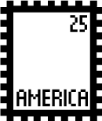
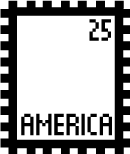
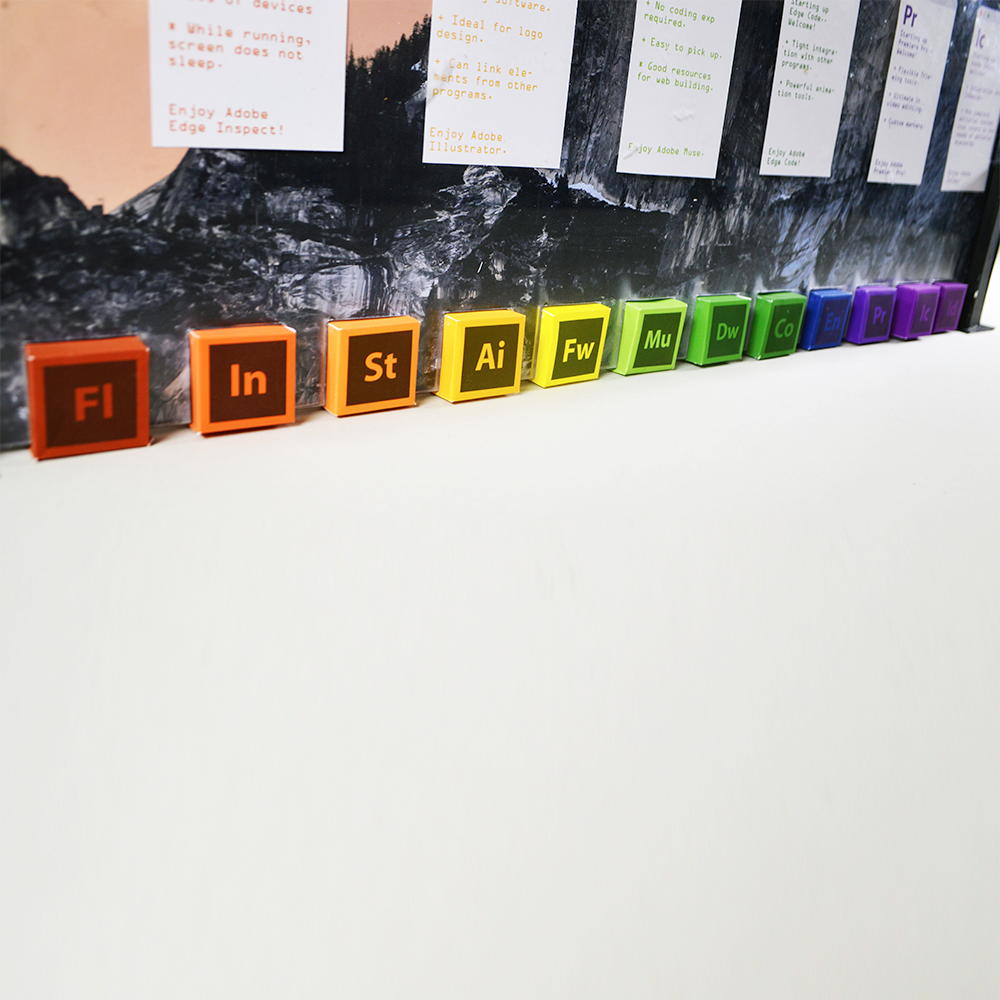
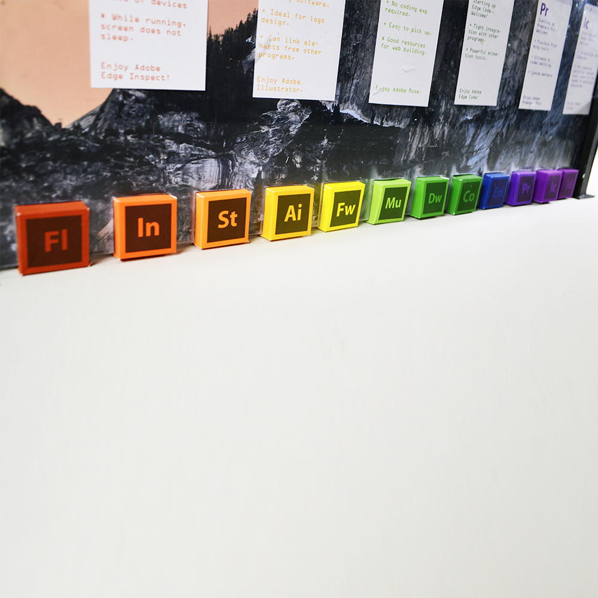

 



Assignment 2 : Positive / Negative
This project while a separate, is a continuation of the sort of work done in the previous assignment. Here, we were asked to find subject that included all the colors of the color wheel we had just made (i.e Gems come in all different colors or Fruits) and then list a positive aspect of that colored subject using colored text on white paper and then a negative aspect of that colored subject using colored text on black paper. So for example:
- Fruits (All colors) -> Apples (Red) -> An apple a day keeps the doctor away (Red text on white paper) and apple pieces get stuck in teeth really easily (Red text on black paper)
Going through every color, the objective was to see how different colors act when placed on white vs. black and also how things such as the typeface the color is placed with or the shape of that the color inhabits can affect legibility and easiness to see or read.
For my personal project, I decided that I would use a subject that I often use in my daily life : The Adobe Creative Suite!
However, I felt that the subject wouldn't attract much interest if it was realized in a 2D form since all us designers have these programs, so if we wanted to see it 2D, we'd look at our computer. So instead I lasercut plexiglass, built small paper boxes, printed out a wallpaper and windows and built a 3D model of a computer monitor.
How did I incorporate the positive/ negative aspect? Easy. Through making a double sided screen. To add to the idea of positive/negative, the positive window looks fine and displays the pros of each adobe program while the negative window is glitching out, with the programs crashing and malfunctioning, displaying the cons of each adobe program.
As stated earlier, I think the most interesting outcome of this project was the seeing how different colors reacted on the different backgrounds and getting to explore this concept in a way that was completely up to us and then when looking at other's projects, seeing how the medium you chose affected the color. In my case, I feel as though the cooler colors came out a lot darker, which made them even harder to see against the black.
I was extremely proud with the outcome of this project from its size (20' w x 13' h) to the interdisciplinary nature of it to how it represented the colors in a positive and negative aspect. If I had to change anything about it, I would probably go back and refine the craft a little more.
//End of Assignment 2//